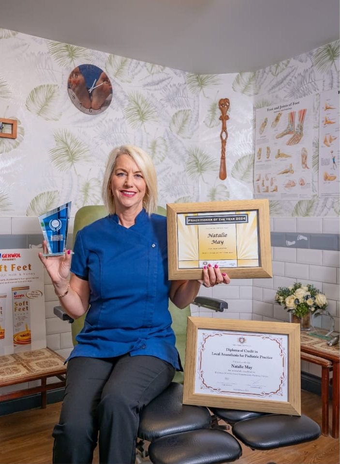

About Natalie May
MSSCh, MBChA — Podiatrist & Chiropodist | SMAE Institute Practitioner of the Year 2024

Natalie May MSSCh, MBChA
Natalie May is a fully qualified and experienced Podiatrist and Chiropodist who has been practising since 1999, and who founded the original Feet First Podiatry Clinic in Downham Market in 2011. Following more than a decade building one of the region's most respected practices, Natalie is now dedicating her practice exclusively to the surgical work she is most passionate about — establishing FeetFirst Surgery at her Chatteris premises.
With over 25 years of clinical experience and thousands of patients treated, Natalie brings an unmatched depth of surgical expertise to every consultation. Her philosophy is straightforward: listen carefully, assess thoroughly, treat expertly, and see every patient through their full recovery.
Patients frequently comment on the warmth and reassurance Natalie provides — particularly those who are nervous about surgery. She takes time to explain every step in plain language, answers all questions patiently, and ensures no patient ever feels rushed or anxious.
Qualifications & Registrations
-
MSSCh — Member of the Society of Surgical ChiropodistsSchool of Surgical Chiropody — specialist qualification in surgical nail procedures
-
MBChA — Member of the British Chiropody and Podiatry AssociationProfessional body membership reflecting high standards of clinical practice
-
HCPC Registered — Health and Care Professions CouncilThe statutory body that regulates Chiropodists and Podiatrists in the UK — protecting the public through professional standards
-
SMAE Institute — Practitioner of the Year 2024Awarded in recognition of outstanding clinical excellence and dedication to patient care in podiatry and surgical chiropody
Why Surgery-Only?
After more than a decade running a full-service podiatry practice, Natalie has chosen to focus exclusively on the surgical aspects of foot care — the area of practice she finds most rewarding and where her specialist training and experience deliver the greatest impact for patients.
Regulated & Recognised
Natalie's practice is governed by the highest professional standards through her registrations with the UK's leading podiatric bodies.
hcpc
Health & Care Professions Council — the UK government regulator for Chiropodists and Podiatrists
BChA
British Chiropody & Podiatry Association — member organisation promoting professional excellence
SSCh
School of Surgical Chiropody — specialist surgical training and qualification body
SMAE Institute
Practitioner of the Year Award 2024
Trust Your Feet to an Expert
With 25+ years of clinical experience, specialist surgical qualifications and an award-winning track record, Natalie is one of the most trusted toenail surgery specialists in the region.